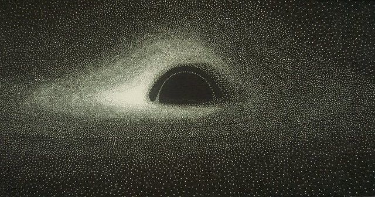
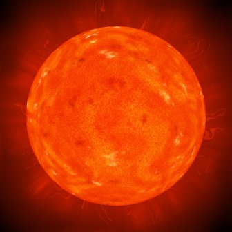
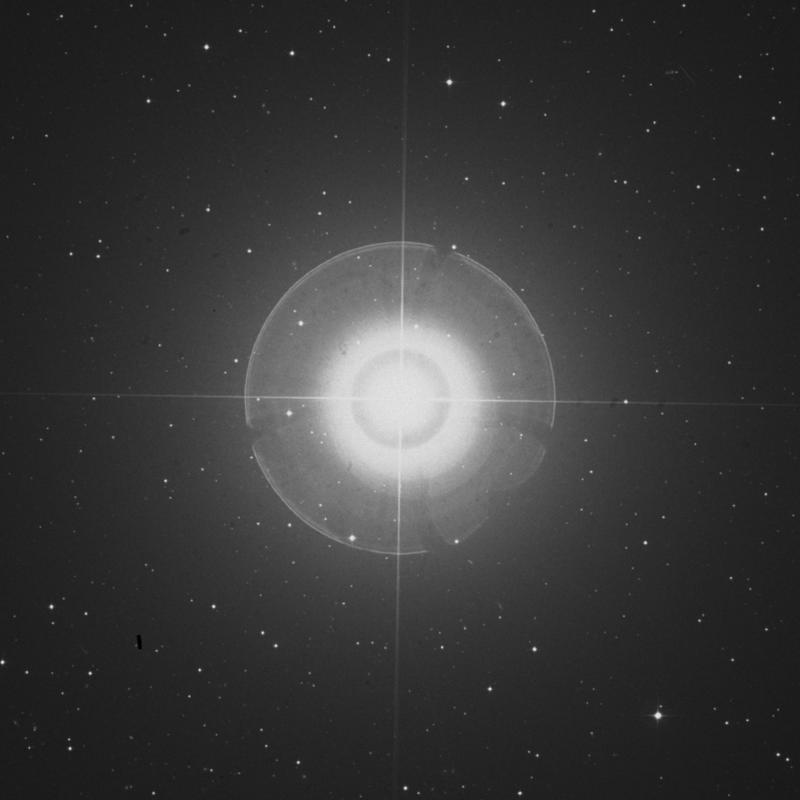
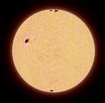
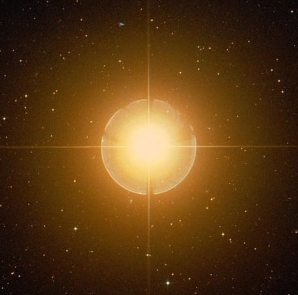

NASA
Podcast
Tv
Interview
A look into the stars
A star is an astronomical object comprising a luminous spheroid of plasma held together by its gravity.
sign up


Antares is the brightest star in the constellation of Scorpius.

Hamal is in the northern zodiacal constellation of Aries.

Pollux is the brightest star in constellation of Gemini.

Beta Ceti is the brightest star in the constellation of Cetus.
I think of space not as the final frontier but as the next frontier. Not as something to be conquered but to be explored.
- Neil deGrasse Tyson
Introduction to Astrophysics
signup to start your astrophysics journey
start